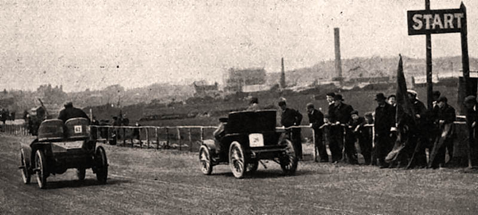
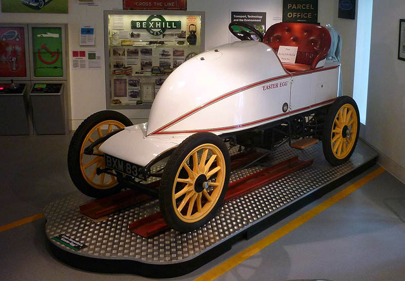

Birthplace of British Motor Racing (1902)
Fathered by the 8th Earl De La Warr and with assistance from the RAC, Britain's first motorcar race was held on the 15th May 1902. The track of 1km (on what was then Bexhill's cycle boulevard) ran from Galley Hill to Sackville Lawns.
Start of 1902 races initiated by the 8th Earl De La Warr.
© Bexhill Museum
The Easter Egg
The star of the show was Leon Serpollet's steam-powered 'Gardner-Serpollet Oeuf de Pacques' (aka The Easter Egg), which won the race at a top speed of almost 55mph along the promenade.A steel sculpture of the Easter Egg can be found on Sackville Lawns on East Parade, and a full-size replica can be viewed in the Motoring Gallery at Bexhill Museum.

Replica of the Serpollet 1902 world land speed record car.
© Bexhill Museum
The Motor Trail
Today you can follow five seafront Motoring Heritage panels and two photo galleries dedicated to the story of those intrepid early motoring pioneers (the 5th panel is situated outside Cooden Beach Hotel).